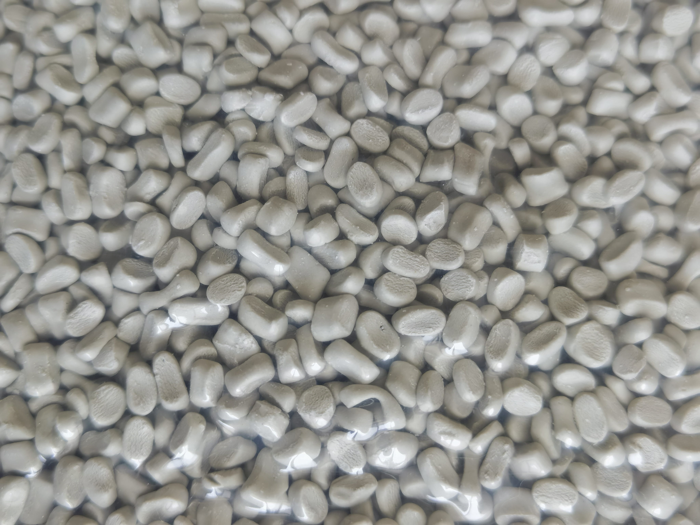
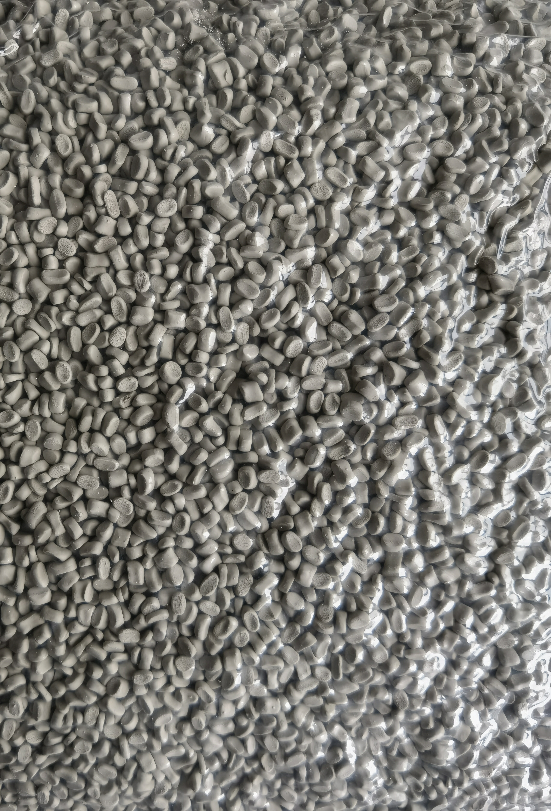

Material map / 01
What is masterbatch?
See the material as a route from base resin to finished part. The concentrate is one part of the system, and process fit decides whether the route is useful.




The material route
Follow what enters the line and what has to happen next.
The clearest definition is functional: masterbatch is a way to carry a concentrate into a plastic process with a controlled route and dose.
PE, PP or another polymer sets the compatibility question.
The grade carries color, filler or function into the process.
Appearance, process and end use define whether the route fits.
01 / Composition
Three parts, one working system.
A masterbatch combines a carrier polymer, the active content that creates the intended result, and processing components that help the material work in its intended system.
The proportion and the chemistry belong to the grade. The exact formulation should not be inferred from the color, the resin abbreviation or a generic product photo.
Photos can show material form. They cannot establish dispersion, performance or compliance for a grade.
02 / Types
Different routes for different jobs.
Color masterbatch is selected around the target appearance. Black and white routes address darkness, opacity and process appearance. Additive and filler masterbatch introduce other functions or materials into the compound.
Bring a sample, code, photo or existing part, then define tolerance.
Review opacity, whiteness or blackness against the final product.
Functional routes need the current issue and intended process.
03 / Selection
The line decides what matters.
Blown film, injection molding, extrusion and recycled feedstock each place different demands on the material and the way it is introduced.
- Which resin is being processed?
- What is the final product or part?
- Which appearance or function must be achieved?
- What is the current grade, issue or reference?
04 / Documents
Ask for evidence with the use in mind.
A TDS, SDS and COA each answer a different question. A tested report may also have a narrower scope than the product family name suggests.
Include the grade, application, destination country and intended use in a document request so the available evidence can be checked properly.